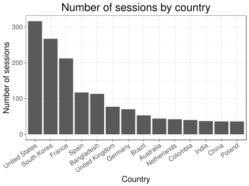

Designing teaching materials
Here, I come back to my first experience teaching an advanced R course (R is a programming language with a lot of users in Statistics / Data Science).
Content
I planned this course in 10 sessions (of 3 hours each) for PhD students with some basics in R.
I initially wanted to talk about the following subjects:
R programming and good practices (2 sessions)
Data analysis with the tidyverse (3 sessions)
R code performance (2 sessions)
R packages (2 sessions)
Bonus: Shiny (1 session)
I basically sticked to this.
Materials
At first, I wanted to do an interactive course using package {learnr} but it would have required way too much work (my thesis supervisor would not have been happy!). So, I finally decided to use package {bookdown}. Using {bookdown} was really easy, and knowing how to use it now will spare me some time when I will write my thesis manuscript (this website is made with {bookdown}).
Materials are available there.
I also decided to create an associated package for many reasons:
to make students install package dependencies that we needed in this course,
to make data easily available to students,
to make solutions available for the chapter on code performance.
This idea of having a bookdown for materials with an associated package is not new (e.g. see the Efficient R Programming book and its associated package).
I also introduced my students to Slack so that we could communicate and share code.
All chapters
I started the course with good practices such as coding style, using RStudio and Git, and getting help.
I continued the course with some base R programming. This is not the funniest part of the course, but knowing this seemed to me as inevitable to be proficient in R.
Then, we learned about the tidyverse using the R for Data Science book. While teaching this course, I have discovered that many people still don’t use {ggplot2} and {dplyr}, two packages that have been used by many people for more than 10 years. So, I had to introduce these two packages from scratch and it took me longer than I had anticipated. In 3 sessions (9h), I had the time to cover R Markdown, {ggplot2} and {dplyr} only.
After the tidyverse, I covered performance of R code. I really like to solve performance problems on Stack Overflow and (I think) I’m really good at it. So, this may have been the chapter I could bring the most to the table. Moreover, one student came with one of the problem she had, and I used her problem as an exercise. At the end, she was able to make her code more than 1000 times faster. For the other exercises, I mainly used problems I had answered on Stack Overflow.
For the last chapter, we covered how to make an R package. I showed them that it was really easy and fast, mainly thanks to packages {usethis} and {roxygen2}. We had time to cover the full documentation, testing, automatic checking of packages and even how to make a website of a package.
Finally, the last session was a “bonus” session we could use either to spend more time on any topic or just to learn something fun like {Shiny}. Indeed, we could have spent at least two more sessions on the tidyverse and one on practicing about performance of R code. Using a Slack poll, we agreed to learn Shiny. For this, I used this nice and free DataCamp course.
Retrospective thoughts
At least half of the materials I used is borrowed from others. At first, I felt bad about this because I felt lazy. But it has already taken me a lot of time to prepare these materials, just reinventing the wheel with some new materials that were already out there would have not been good for me or my students.
I think using {bookdown}, Git and Slack was a good idea. Indeed, using {bookdown} makes the structure of the course very clear. Moreover, other resources that I use are also in this format so that students are already familiar with it. Then, Git is so useful for everything code related, so even if some students do not set the point of learning Git now, they will thank me later. Finally, Slack was really helpful to do many things such as sharing code to help students and also to make some polls to choose between options.
I feel like I have covered lots of useful things. However, I would have wanted my course to be useful for more people (I had only 10-12 students). In order to get motivated to make these materials, I designed them to be used by other people anywhere in the world.
#> Warning: package 'tibble' was built under R version 3.5.2
#> Warning: package 'readr' was built under R version 3.5.2
#> Warning: package 'purrr' was built under R version 3.5.2
#> Warning: package 'dplyr' was built under R version 3.5.2
#> Warning: package 'stringr' was built under R version 3.5.2
#> Warning: package 'forcats' was built under R version 3.5.3
library(googleAnalyticsR)
#> Warning: package 'googleAnalyticsR' was built under R version 3.5.3
ga_auth(".httr-oauth")
data_course_country <- google_analytics(
viewId = "172000044",
date_range = lubridate::ymd("2018-03-20", Sys.Date()),
dimensions = c("country"), # , "pagePath", "hour", "medium"
metrics = c("sessions") # , "pageviews"
)
sum(data_course_country$sessions)
#> [1] 4014
data_course_country %>%
mutate(country2 = ifelse(sessions < 30, NA, country)) %>%
ggplot(aes(reorder(country2, -sessions), sessions)) +
geom_col() + scale_x_discrete(na.translate = FALSE) +
bigstatsr::theme_bigstatsr() +
theme(axis.text.x = element_text(angle = 35, hjust = 1)) +
labs(x = "Country", y = "Number of sessions",
title = "Number of sessions by country")
#> Warning: Removed 73 rows containing missing values (position_stack).

New year
I’m teaching this again this year (2019). I was also teaching at ENSIMAG in the meantime, so that it is good that all materials were ready from last year.
I have updated some small parts of the course, making sure that all code was still running, replacing exercises that were too hard, etc.
I also decided to plan only 9 sessions in 3 weeks instead of 10 sessions in 5 weeks. Indeed, only one session of packages is sufficient and students from last year reported that 5 weeks was too long for a course.